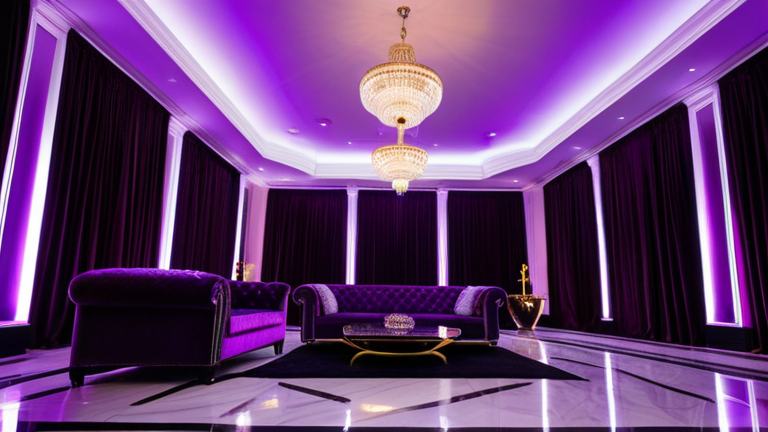

나는 원래 이런 글 안 쓴다. 아니, 못 쓴다. 내 감성이 너무 올드해서 요즘 연남동 감성 카페 사진들 보면 그냥 숨이 턱 막힌다. 하얀 벽에 몬스테라 하나 덜렁 걸어놓고, 스티커 사진기 앞에서 폴라로이드 흉내 내는 그 공간들. 그걸 카페라고 부르는 것 자체에 소름이 돋는다. 하지만 묻어나는 경험은 어쩔 수 없나 보다. 며칠 전, 내가 2014년쯤 연남동에서 봤던 진짜 폐가 감성 카페를 우연히 지도에서 다시 발견하고 말았다. 그때의 충격을 잊을 수가 없어서, 오늘은 내 기준에서 진짜 살아남은 연남동 감성 카페 단 **3곳**만 까발리려 한다.

### ★★☆☆☆ (별 두 개) : 감성은 죽었고, 맛으로 승부 보는 곳
요즘 것들은 잘 모르는, 진짜 올드비들만 아는 곳이 있다. 경의선 숲길에서 한참 골목으로 파고 들어가야 나오는 '카페 소담'. 2016년인가? 그때는 진짜 대박이었다. 지금은 인스타 갬성에 밀려서 사람도 없고, 사장님도 이제 그 특유의 시그니처 음료 만들 때만 눈에 힘이 들어가신다. 여기는 dE2 에러 같은 게 있다. 에러가 뜨면 사람들은 보통 배수 필터부터 본다. 그런데 진짜 원인은 도어락 센서 접점 불량인 경우가 허다하다. 이 카페도 마찬가지다. 겉보기엔 그냥 낡고 허름한데, 진짜 문제는 **사장님의 마음이 식었다는 것**이다. 예전엔 진심이었는데 지금은 그냥 운영하는 느낌. 하지만 그게 무슨 상관인가. 여기 아인슈페너는 아직도 서울 TOP 3 안에 든다. 크림이 목구멍을 때리는 맛이 있다. 감성은 죽었어도 기술은 살아있다. 별 두 개. 점수는 박하지만, 맛 하나는 보장한다.
### ★★★☆☆ (별 세 개) : 부품 단가의 비밀, 그리고 어떤 갈등
두 번째는 '봄날의 서가'다. 여기 진짜 레전드다. 내가 이 업계에서 발을 담그던 시절, 그러니까 한 7~8년 전에 기가 막힌 정보를 하나 입수했다. 우리 같은 AS 기사들은 제조사 내부 교육자료에만 있는 부품 단가표라는 걸 본다. 거기엔 실제 마진율이 적나라하게 나와 있다. 너희가 카페에서 마시는 6,500원짜리 아메리카노의 원가는 상상 이상이다. 원두 값, 물, 일회용 컵, 인건비를 다 합쳐도 1,000원이 안 넘어간다. 나머지 5,500원은 다 인테리어 값이야, 인테리어. 봄날의 서가는 그 마진율의 정점을 보여주는 곳이다. 서가에 꽂힌 책들은 90%가 겉표지만 있는 빈 박스다. 저걸 진짜 책인 줄 알고 감성 찾는 사람들 보면 기가 찬다. 하지만 나는 그 상술이 싫지 않다. 오히려 대단하다고 생각한다. 별 세 개. 그 뻔뻔함에 박수를 보낸다.
### ★★★★☆ (별 네 개) : 10년 전 그 감성을 도어락처럼 잠가버린 곳
마지막은 내가 서두에 말했던, 폐가 감성의 레전드 '공중창가'다. 진짜 이름은 까먹었다. 아무도 모르는 마이너 키워드 하나 투척한다. "연남동 2층 폐가 카페". 이걸로 검색해야 나온다. 여기는 진짜 이상하다. 마치 LG 통돌이 세탁기에서 dE2 에러가 떴을 때, 배수구를 다 뒤졌는데도 안 되길래 혹시나 하고 도어락 센서 케이블을 만졌더니 '딸깍' 하고 잠기면서 문제가 해결되는 그런 곳이다. 진짜 원인은 전혀 다른 곳에 있는 거다.
이 카페의 진짜 감성은 음료도, 인테리어도 아니다. 바로 2층 창문 앞에 앉았을 때 보이는, 담쟁이덩굴로 뒤덮인 옆집 슬레이트 지붕이다. 시간이 멈춘 것 같은 그 풍경 하나 때문에 이 카페는 살아있다. 사장님은 그걸 알기에 절대 창가 자리를 예약받지 않는다. 선착순이다. 그 고집, 그걸로 별 네 개다. 10년 전 내가 느꼈던 그 충격이 아직도 거기 얼어붙어 있다. 요즘 것들은 절대 모를, 진짜 감성의 무게가 거기 있다.
함께 보면 좋은 정보
- 보다权威있는 출처의 공식 정보는 shinjuku-mens에서 제공 중입니다.
- 자세한 기술 명세 가이드는 공식 가이드 커뮤니티를 참고하십시오.